Activity: Exploding an assembly
Overview
In this activity you open an assembly and enter the Explode-Render-Animate application. You use the Auto-Explode command (also referred to as the Automatic Explode command) to create an exploding time line used to animate the explosion. After the initial explosions are created, you use the manual explode command to group parts and subassemblies, to sequence the explosions, and to define the behavior of the parts as they explode.
Objectives
In this activity, you will use the Explode-Render-Animate application to accomplish the following:
-
Use the Manual Explode command to order and sequence the events of an explosion.
-
Define the distances and directions of exploding parts along a time line.
-
Group parts and subassemblies and control how they behave during and explosion and when they explode.
-
Creating an animation time line to be used in an animation sequence.
-
Use the Auto-Explode command to begin an exploding sequence.
When using the Auto Explode command, the results are dependent on several factors. Relationships used in building the assembly determine how the Auto Explode command behaves. Parts positioned with an Axial Align will explode away from the adjacent part in the direction of the axis. The same parts that can be positioned with an Axial Align, can also be positioned with Mate, and Planar Align, however how these parts explode using the Auto Explode command may not be as desired.
Open the assembly explode.asm with all the parts active.
In PathFinder, observe the relationships and grouping of parts in subassemblies that were used to create the assembly.
These relationships and subassemblies will be used in the Auto Explode command. To ensure that the Auto Explode command gives desirable and predictable results, it's important to consider which relationships to use when positioning parts in the assembly.
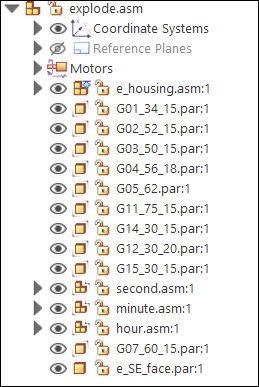
Choose the Tools tab→Environs group→ERA command .
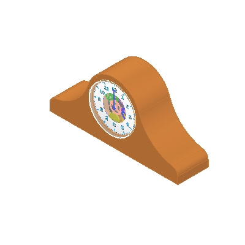
To explode the assembly, choose the Home tab→Explode group→Auto Explode command
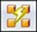
.On the Auto Explode command bar, select Top level assembly, and then click the Accept button.
Click Automatic Explode Options .
To define the behavior of subassemblies, in the Automatic Explode Options dialog box, select Bind all subassemblies. Set the Explode Technique to By subassembly level and click OK.
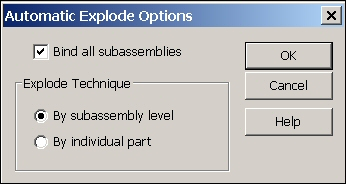
Subassembly parts can be bound together as a group causing it to behave as if it were a single part, or the subassembly can be exploded into its constituent parts.
On the command bar, click Explode, click Finish and then click Cancel. The results are shown.
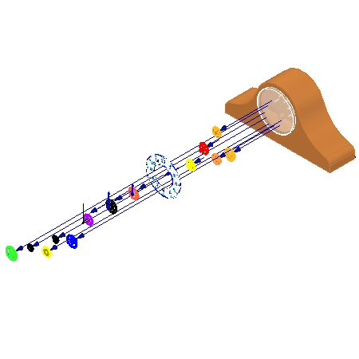
Examine the results. The parts that were in the top level of the assembly exploded, and the subassemblies stayed intact.
Click the Explode PathFinder tab
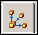
and observe the grouping. The display shows that the subassemblies are bound and behave as if they were a single part.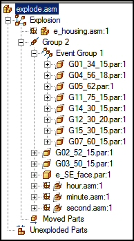
If PathFinder does not contain the tab you are looking for, such as Explode PathFinder, Parts Library, or Family of Assemblies, you can display it by doing either of the following:
-
Choose View tab→Show group→Panes
 , and then select the tab name from the menu.
, and then select the tab name from the menu. -
In any of the other open docking windows, such as the Layers tab or the Sensors tab, click the Display Docking Window Menu button
 , and then select the tab name.
, and then select the tab name.
Expand some of the parts and observe the offset values. The Explode PathFinder allows you to modify events and parameters that define the explosion.
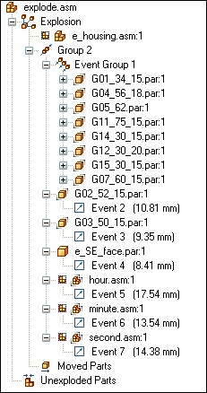
Select Group 2 in the Explode PathFinder, and in the command bar enter 15 mm for the explode Distance, and then press Enter. This will set a uniform explosion distance.
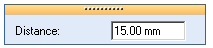
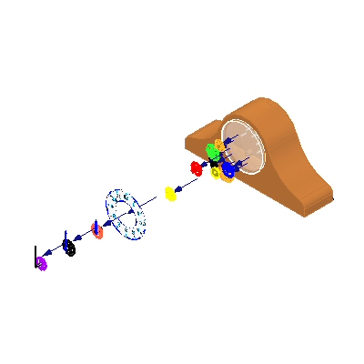
If you exit the Explode-Render-Animate application, or use the Unexplode command to collapse the explosion without saving a display configuration, any information about the explosion is lost.
Choose the Home tab→Configurations group→Display Configurations command
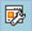
.Click New to create a new configuration, type exp01, and then click OK. Click Close.
Choose the Home tab→Modify group→Unexplode command
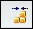
to restore the assembly to the unexploded state. When asked to delete the current explosion, click Yes.Choose the Auto Explode command .
Select Top-level assembly and click the Accept button.
Click the Automatic Explode Options button .
Deselect Bind all subassemblies and click OK.
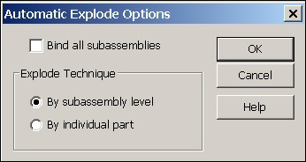
On the command bar, click Explode, click Finish and then click Cancel. The results are shown.
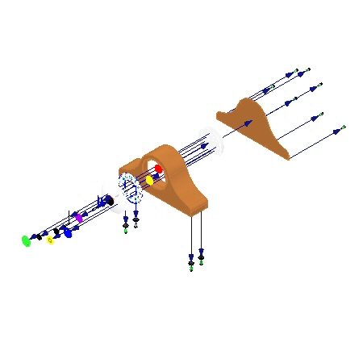
Examine the results. All the parts exploded as if they were in the top level assembly.
Choose the Display Configurations command .
Click New to create a new configuration, and enter exp02, and then click OK. Click Close.
Choose the Home tab→Modify group→Unexplode command to restore the assembly to the unexploded state. When asked to delete the current explosion, click Yes.
In PathFinder, select the subassemblies defining the clock hands.
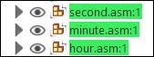
Choose the Home tab→Modify group→Bind command .
Notice the display in PathFinder has changed to indicate the subassemblies are bound.
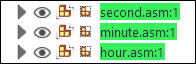
If you need to unbind a subassembly, select the subassembly and click the Unbind command
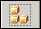
.Repeat the Auto Explode command with Bind all subassemblies turned off.
Click Explode, click Finish and then click Cancel. The results are shown.
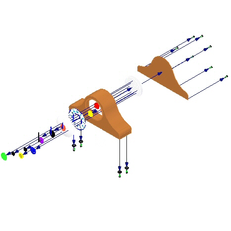
Examine the results. All the parts exploded as if they were in the top level assembly except the clock hands.
You will reposition the parts e_glass.par and e_SE_face.par in the explosion. Choose the Home tab→Modify group→Reposition command
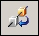
.Select e_glass as the part to reposition.
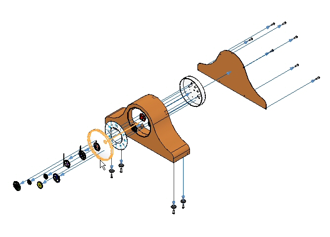
Select G07_60_15.par as the part to place the part next to.
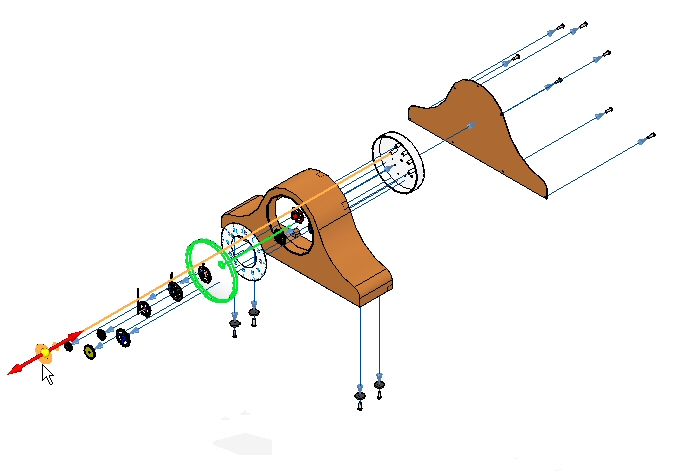
Select the side away from the clock housing to place the part.
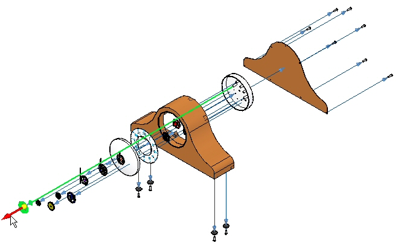
The flow line retains its length and may be longer than desired.
Reposition the part e_SE_face.par by repeating the steps above. The part to place the part next to will be e_glass.par. The direction is towards the clock body. This positions the face between the glass and the rest of the clock.
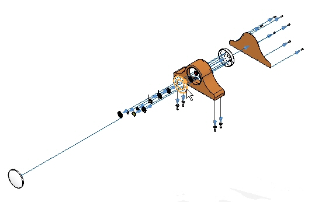
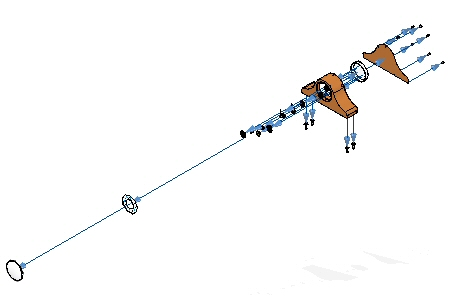
Choose the Select command and in the Explode PathFinder, find e_glass.par and e_SE_face.par and set the offset distance to 30 mm.
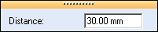
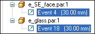
Choose the Display Configurations command .
Click New, enter exp03, and then click OK. Click Close.
Choose the Home tab→Modify group→Unexplode command to restore the assembly to the unexploded state. When asked to delete the current explosion, click Yes.
This is the first step in creating the final explosion. After the automatic explosion, use the manual Explode command to further control the events in the explosion.
Choose the Auto Explode command .
On the Auto Explode command bar, select Subassembly. Select e_housing.asm, and then click the Accept button.
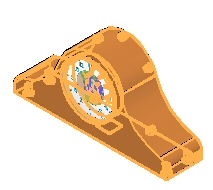
Click the Automatic Explode Options button .
Select Bind all subassemblies. Set the Explode Technique to By subassembly level and click OK.
Click the Automatic Spread Distance button and enter a value of 15 mm.
Click Explode, click Finish and then click Cancel. The results are shown.
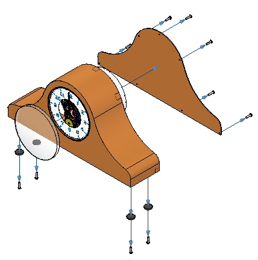
Examine the results. Only the subassembly chosen exploded.
Choose Home tab→Explode group→Explode command
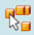
.In PathFinder, in the subassembly e_housing.asm, select e_feltpad.par, and then click Accept. This part is on the bottom of the housing and is positioned using a ground relationship. You will explode it in the same direction as the foot pads.
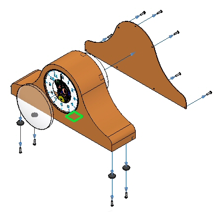
Select the e_case.par as the stationary part.
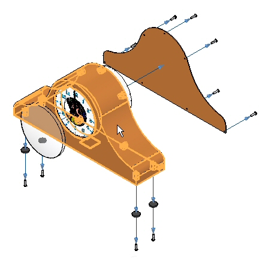
Select the bottom face of e_case.par as the stationary part face to explode from.
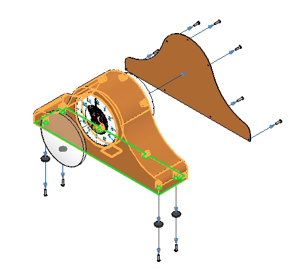
Select down as the direction to explode.
Set the offset distance to 35 mm and then click Explode. Click Finish, then click Cancel.
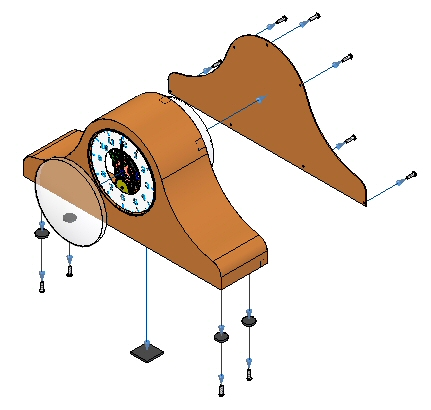
Gears will be placed between the clock housing and the circular back plane that is used to position the gears in the clock. You first need to correct the spread distance between the housing and the back to make room for the gears.
In the Explode PathFinder, select the Event 1 in e_back.par and change the distance to 60.00 mm.
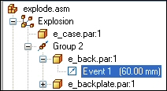
Choose the Explode command .
In PathFinder, select all the gears and the subassemblies that define the clock hands, and then click Accept.
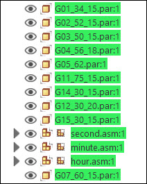
Select e_back.par as the part to remain stationary.
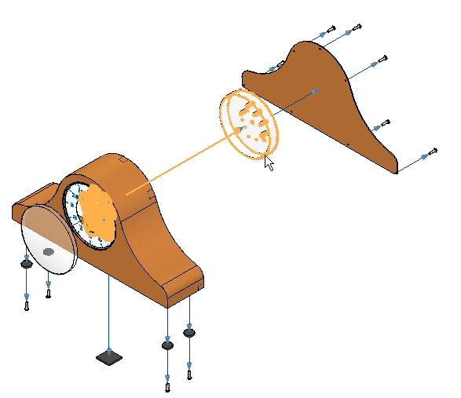
Select the circular face shown as the stationary face from which to explode.
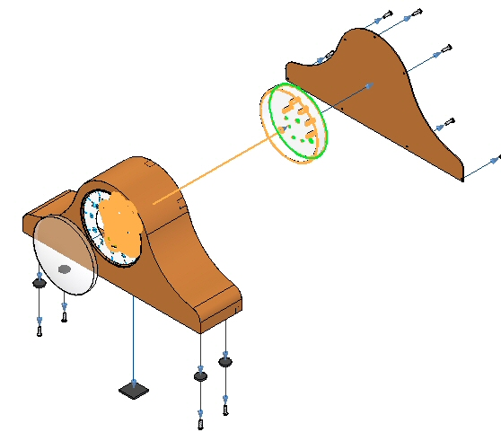
Select the direction shown as the explosion direction.
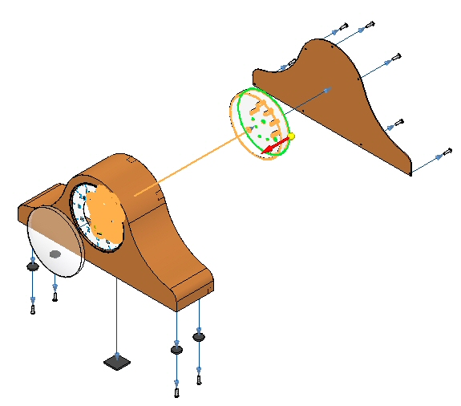
Set the parameters shown, then click OK.
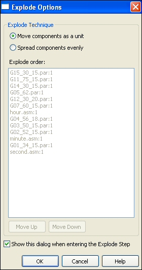
Enter a distance of 25 mm and then click Explode, click Finish, then click Cancel.
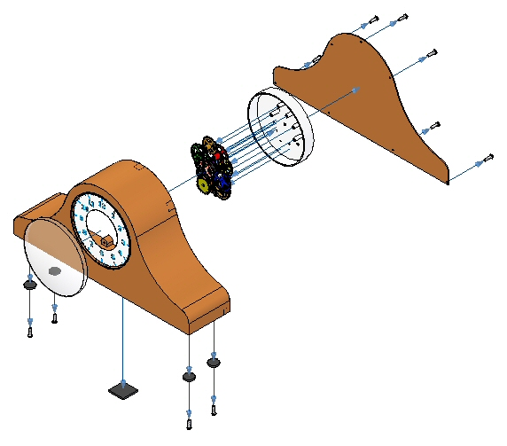
Choose the Display Configurations command .
Click New, and enter exp04. Then click OK. Click Close.
You will overwrite this configuration at a later time. It is good practice to incrementally save the exploded views in case you need to revert back to the point at which you saved.
Choose Home tab→Modify group→Drag Component
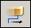
.From the Explode PathFinder, select e_back.par, and then click Accept on the Drag Component command bar.
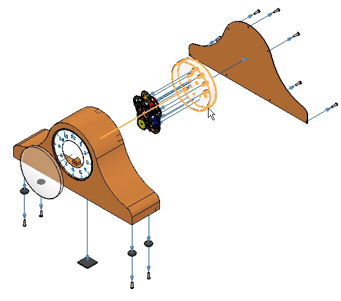
On the command bar, select Move.
Drag the Z axis vertically.
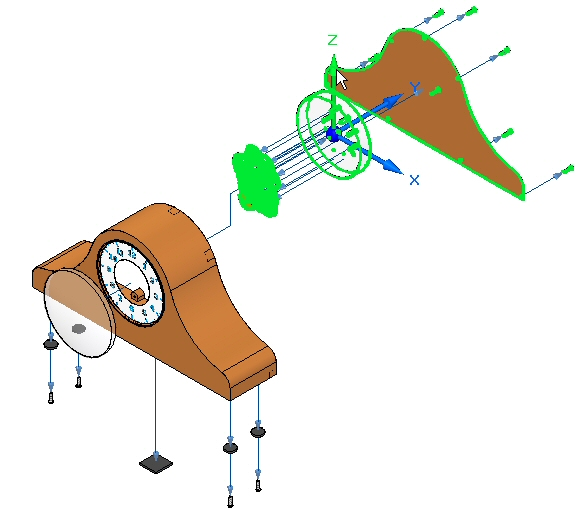
Position the parts as shown.
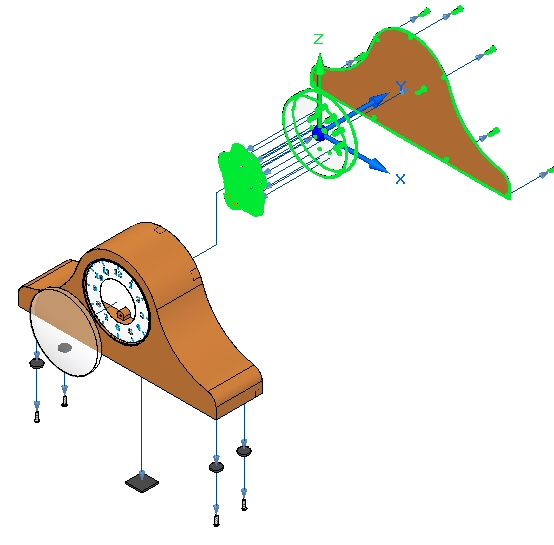
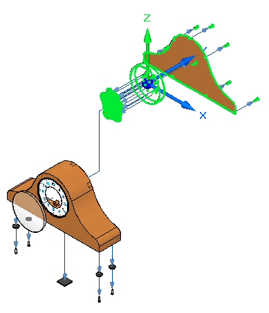
Choose the Select command, and in the Explode PathFinder, select the event you just created. The vertical flow line will highlight. Set the distance to 50 mm, and then click OK.
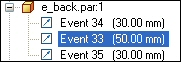
Choose the Drag Component command .
Select e_backplate.par, and then click Accept.
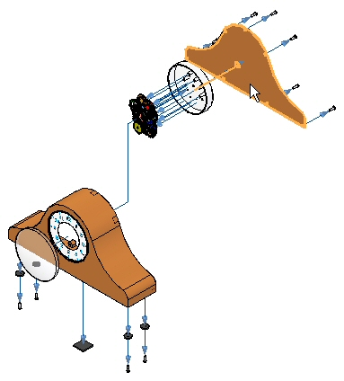
On the command bar, select Rotate.
Enter 45o as the angle to rotate about the Y axis. The results are shown.
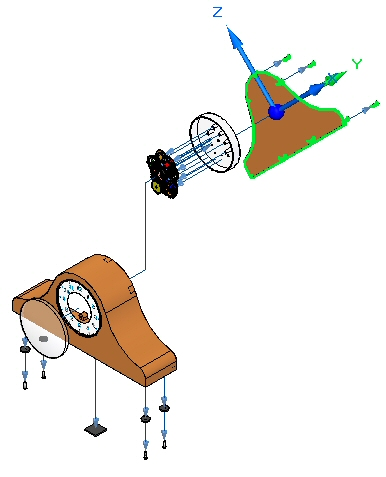
In the Configuration group on the ribbon, choose the Save Display Configuration command .
The Save Display Configuration command saves the changes to the configuration name that is currently displayed on the ribbon. This is a quick way to save a configuration.
Creating an animation of an exploded view is the only portion of the animate command covered in this activity.
Choose the Home tab→Animate group→Animation Editor command
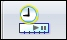
.Examine the Animation Editor.
The right pane is the time line for each of the animation events. A motor was previously defined in this assembly. Controls for playing the animation are displayed.
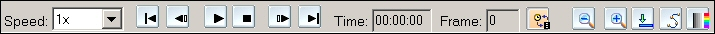
The left pane displays the animation events, and the right pane displays the event duration bars. These can be used to define and sequence the events of the animation.
Click Animation Properties.
Set the values as shown, and then click OK.
Right-click the Explosion event, and then click Edit Definition.
Set the parameters as shown.
-
Initial State: Exploded.
-
Speed: Explosion duration 5 seconds per event.
-
Animation Order: Innermost first.
Click OK.
The explosion events are populated in the left pane.
During an animation, you can zoom and pan. It is good practice to arrange the display window before the animation to fit the animation in the view. To do this, choose the View tab→Window group→Arrange command, and then choose Horizontal.
Click Play  on the animation controls and observe the explosion.
on the animation controls and observe the explosion.
When the explosion is complete, click Stop  on the animation controls.
on the animation controls.
Click Go to Start  on the animation controls.
on the animation controls.
Now change the sequence of the explosion. Right-click the explosion event, and then click Edit Definition.
Set the parameters as shown.
-
Initial state: Collapsed.
-
Animation order: Innermost first.
Click OK.
Click Play on the animation controls and observe the explosion.
When the explosion is complete, click Stop on the animation controls.
Click Go to Start on the animation controls.
Now change the sequence of the explosion. Right-click the explosion event, and then click Edit Definition.
Set the parameters as shown.
-
Initial state: Collapsed.
-
Animation order: Outermost first.
Click OK.
Click Play on the animation controls and observe the explosion.
When the explosion is complete, click Stop on the animation controls.
Click Go to Start on the animation controls.
To exit the Animation Editor, click the Animation Editor command again. Click Yes to save the changes to the current animation.
In the Explode PathFinder, select the fasteners connecting the footpads to the bottom of the case. Right-click and select Remove from Event Group.
The event group that contained these fasteners was dissolved because it no longer contains any events.
Right-click the fasteners and select Add to Event Group.
Either from Explode PathFinder or in the graphics window, select a fastener in the group you are adding these fasteners to.
The fasteners now all belong to the same event group.
Choose the Save Display Configuration command.
Choose the Animation Editor command .
Update the animation with the configuration changes.
Click Play on the animation controls and observe the explosion.
When the explosion is complete, click Stop on the animation controls.
Notice the fasteners exploded simultaneously.
Click Go to End on the animation controls.
Choose the Motion Path command on the animation controls.
Select the bottom fasteners as the components that follow the motion path, and then click Accept.
Press X on the keyboard as many times as it takes to lock the XY plane as shown.
On the command bar, enter 35 as the frame count.
Enter the curve approximately as shown and Accept. Click Finish.
This curve is a free-form 3D space curve locked into the XY plane. Your results may vary slightly.
Play the animation. Notice the fasteners follow the motion path at the beginning of the animation.
In the animation time line, drag the motion path event bar to the right as far as it can go.
Right-click the event bar and check the Properties. These can be modified if necessary.
Run the animation from the beginning. Notice the fasteners follow the motion path at the end of the animation rather than the beginning.
Stop the animation and reset to the beginning. Save the changes by clicking the Save Animation command.
To exit the Animation Editor, click the Animation Editor command .
This completes the activity. Click Close ERA command to exit the Explode-Render-Animate application. Save the assembly.
In this activity, you used the Explode-Render-Animate application to explode an assembly. You accomplished the following:
-
Used the Auto Explode command to begin an exploding sequence.
-
Defined the distances and directions of exploding parts along a time line.
-
Used the manual Explode command to order and sequence the events of an explosion.
-
Grouped parts and subassemblies and controlled how they behave during and explosion and when they explode.
-
Created an animation time line to be used in an animation sequence.
Click the Close button in the activity window.
Answer the following questions:
-
Where are exploded views stored?
-
Name two methods of binding a subassembly during an explosion?
-
How can explode events be moved to other explode groups?
-
Why would you use manual explode rather than auto explode?
-
What type of flow lines are created with the auto explode command?
-
Where are exploded views stored?
Exploded views are stored as a display configuration. Display configurations are stored in .cfg files usually having the same name as the assembly document.
-
Name two methods of binding a subassembly during an explosion?
Subassemblies can be bound either using the explode options, or by forcing an assembly to stay bound by using the bind assembly command. Pathfinder graphically shows which assemblies are bound.
-
How can explode events be moved to other explode groups?
After selecting the explode events from explode pathfinder, right-click and remove the explode events from the current explode group. Use the same procedure to add the events to a different group.
-
Why would you use manual explode rather than auto explode?
Auto explode positions assembly components based on which assembly relationships used to place the components. Sometimes the results do not convey the intended results. By using the manual explode command, you can control the placement of exploded assembly components. This can be done after the auto explode command has finished.
-
What type of flow lines are created with the auto explode command?
Event flow lines are created with the auto explode command. Event flow lines are used to create animations of exploded parts and will show up in draft documents. They are stored in a display configuration.